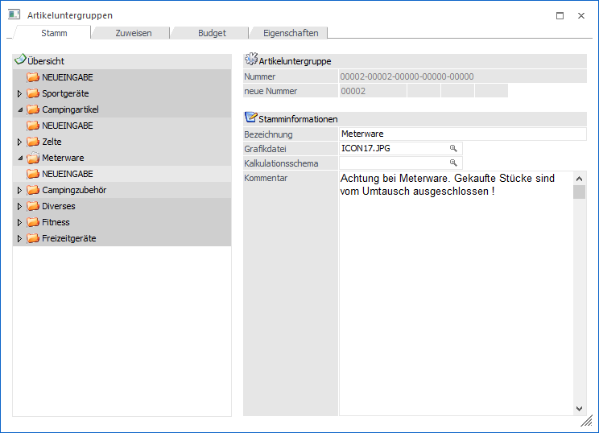
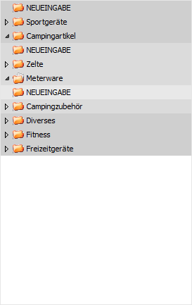
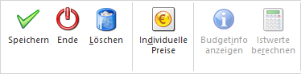

Im Menüpunkt…
1 WinLine FAKT
1 Stammdaten
1 Gruppenanlage
1 Artikeluntergruppen
… können Artikeluntergruppen angelegt werden. Artikeluntergruppen dienen zum einen als Auswertungskriterium für div. Listen und können zum anderen auch für die Preisgestaltung/Preisfindung herangezogen werden.
Die Artikeluntergruppen können in fünf Ebenen unterteilt werden. Um eine neue Artikeluntergruppe anzulegen, aktivieren Sie die Neueingabe und geben Sie eine max. 5stellige Artikeluntergruppennummer (wird die vom Programm vorgeschlagene Artikeluntergruppennummer akzeptiert, wählen Sie einfach die ENTER-Taste an) ein.

Die Artikeluntergruppen können in bis zu 5 Ebenen gegliedert werden.
Beim Öffnen des Menüpunktes werden alle Artikeluntergruppen der 1. Ebene dargestellt.
Wird vor der entsprechenden Artikeluntergruppe ein +-Symbol angezeigt, weist das darauf hin, dass zwischen dieser Artikeluntergruppe und der nächsten mit der Ebene 1 mit der Ebene 2 angelegt sind.
Wenn der Eintrag markiert ist, können alle Einträge der 2. Ebene angezeigt werden.
Dazu kann auch mit der Maus das +-Symbol angewählt werden. Durch Drücken der +-Taste am Ziffernblock werden alle untergeordneten Einträge, auch die der 3. Ebene - falls vorhanden - angezeigt.
Das gleiche Prinzip gilt auch für die Artikeluntergruppen der Ebene 2. Wenn davor ein +-Symbol steht, befinden sich "darunter" Artikeluntergruppen mit der Ebene 3, usw.
Wenn eine Artikeluntergruppe mit untergeordneten Stufen "geöffnet" wurde, wird dies mit dem - -Symbol versehen. Wird das Zeichen mit der Maus angewählt bzw. durch Drücken der - Taste am Ziffernblock, werden alle untergeordneten Ebenen geschlossen - es wird nur mehr die aktive Artikeluntergruppen angezeigt.

Ø Bezeichnung
Eingabe einer bis zu 25-stelligen Bezeichnung.
Ø Grafikdatei
Hinterlegung einer Grafik. In der WEBEdition wird diese Grafik bei der Artikelinfo und bei den Artikellisten (Aktionen, Top Produkte, Schnäppchen) verwendet, wenn beim betroffenen Artikel keine Grafik hinterlegt ist.
Ø Kalkulationsschema
Optionale Vorbelegung eines Kalkulationsschemas. Bei den Artikeln mit dieser Untergruppe wird das hier hinterlegte Schema bei einer Preiskalkulation im Artikelstamm vorgeschlagen.
Ø Kommentar
Eingabe eines Kommentartextes, der auf den div. Auswertungen mitangedruckt werden kann.
Buttons

Ø Speichern
Durch Anklicken des SPEICHERN-Buttons wird die bearbeitete Artikeluntergruppe gespeichert.
Ø Ende
Durch Anklicken des ENDE-Buttons bzw. durch Drücken der ESC-Taste wird das Fenster geschlossen, vorgenommene Änderungen werden verworfen.
Ø Löschen
Durch Anklicken des LÖSCHEN-Buttons wird die aktive Artikeluntergruppe gelöscht.
Ø Individuelle Preise
Durch Klicken des Buttons Individuelle Preise kann für die Artikelgruppe ein Preis bzw. sinnvoller ein Rabatt vergeben werden. (Nähere Informationen entnehmen Sie bitte dem Kapitel "Individuelle Preise")